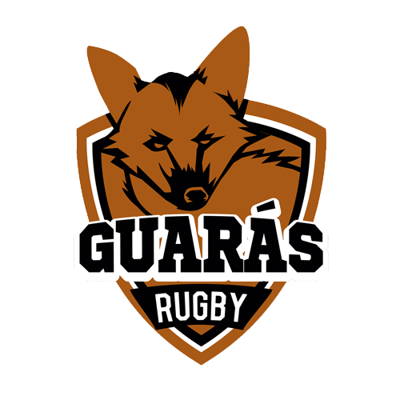

Liga de Rugby Universitário de 2016 - Masculino
No ano de 2016 foram disputados dois torneios independentes: o I e o II Torneio da Liga de Rugby Universitário, inaugurando um estágio de maior desenvolvimento do rugby no meio discente das universidades públicas do Rio de Janeiro. Antecedidos por diversas competições quadrangulares disputadas em 2015, o I Torneio da Liga de Rugby Universitário foi o primeiro evento a dar um passo maior quanto a organização das partidas em todas as suas particularidades.
Clubes Participantes
UERJ, UFRJ, Rural, UFF, CEFET, UNIRIO e Ururau (UENF) foram as equipes universitárias que competiram pelos títulos dos torneios. Os Guarás de Juiz de Fora também foram convidados para as duas edições do torneio, representando a UFJF.
 |
 |
 |
 |
|
|---|---|---|---|---|
| UERJ | UFRJ | Rural | UFF | UNIRIO |
| Rio de Janeiro, RJ | Rio de Janeiro, RJ | Seropédica, RJ | Niterói, RJ | Rio de Janeiro, RJ |
|  | ||||
| CEFET | Guarás Rugby | Ururau | ||
| Nova Iguaçu, RJ | Juiz de Fora, MG | Campos dos Goytacazes,RJ |
Torneios
Os dois torneios do ano de 2016 foram disputados de forma independente
| Torneio | Lugar | Data | Campeão |
|---|---|---|---|
| I | Gragoatá | 9 de Julho de 2016 | UFF |
| II | Campo Olímpico | 3 de Dezembro de 2016 | UFRJ |
Elencos
(em breve)
Resultado dos Jogos
I Torneio da LRU
|
Fase de Grupos - Jogo 1 | |
|---|---|---|
| UFRJ 24 x 5 UNIRIO |
|
Fase de Grupos - Jogo 2 | |
|---|---|---|
| UFF 31 x 0 CEFET |
|
Fase de Grupos - Jogo 3 | |
|---|---|---|
| Rural 38 x 0 UERJ |
| Fase de Grupos - Jogo 4 | ||
|---|---|---|
| Ururau 10 x 7 UFJF |
|
Fase de Grupos - Jogo 5 | |
|---|---|---|
| UFF 43 x 0 UNIRIO |
| Fase de Grupos - Jogo 6 | |
|
|---|---|---|
| CEFET 19 x 0 UFRJ |
|
Fase de Grupos - Jogo 7 | |
|---|---|---|
| UERJ 14 x 19 Ururau |
|
Fase de Grupos - Jogo 8 | |
|---|---|---|
| Rural 17 x 5 UFJF |
| Fase de Grupos - Jogo 9 | ||
|---|---|---|
| CEFET 38 x 0 UNIRIO |
|
Fase de Grupos - Jogo 10 | |
|---|---|---|
| UFF 43 x 0 UFRJ |
|
Fase de Grupos - Jogo 11 | |
|---|---|---|
| Rural 12 x 17 Ururau |
|
Fase de Grupos - Jogo 12 | |
|---|---|---|
| UERJ 0 x 29 UFJF |
|
Decisão 7º e 8º | |
|---|---|---|
| UERJ 29 x 0 UNIRIO |
| Decisão 5º e 6º | |
|
|---|---|---|
| UFJF 22 x 0 UFRJ |
| Decisão 3º e 4º | |
|
|---|---|---|
| CEFET 17 x 0 Rural |
|
Final | |
|---|---|---|
| UFF 25 x 7 Ururau |
II Torneio da LRU
|
Fase de Grupos - Jogo 1 | |
|---|---|---|
| UFF 28 x 5 UERJ |
| Fase de Grupos - Jogo 2 | |
|
|---|---|---|
| CEFET 7 x 24 Rural |
|
Fase de Grupos - Jogo 3 | |
|---|---|---|
| UERJ 5 x 21 UFJF |
| Fase de Grupos - Jogo 4 | |
|
|---|---|---|
| CEFET 0 x 40 UFRJ |
|
Fase de Grupos - Jogo 5 | |
|---|---|---|
| UFF 41 x 5 UFJF |
|
Fase de Grupos - Jogo 6 | |
|---|---|---|
| Rural 10 x 18 UFRJ |
|
Decisão 5º e 6º | |
|---|---|---|
| UERJ 26 x 7 CEFET |
|
Semi-Final 1 | |
|---|---|---|
| UFF 12 x 7 Rural |
|
Semi-Final 2 | |
|---|---|---|
| UFRJ 35 x 10 UFJF |
|
Decisão de 3º e 4º | |
|---|---|---|
| Rural 10 x 0 UFJF |
|
Final | |
|---|---|---|
| UFRJ 28 x 21 UFF |